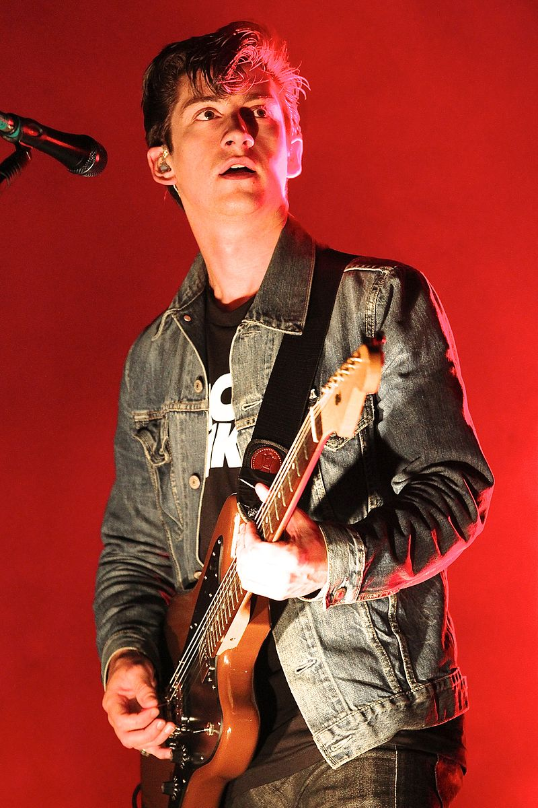
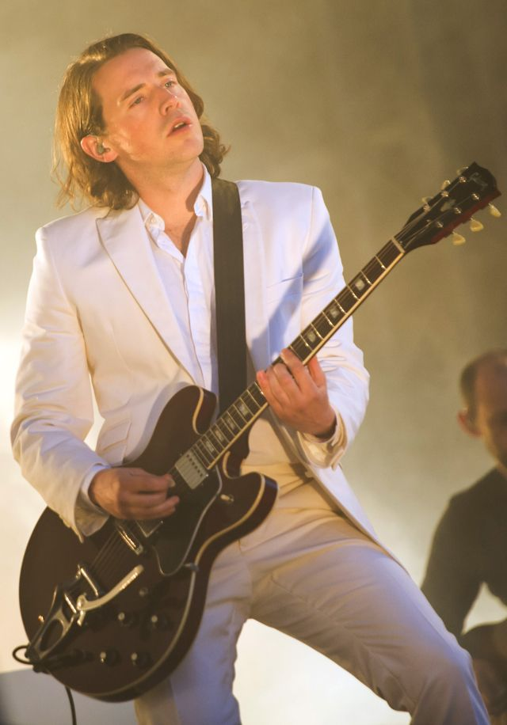

Members
Alex Turner
Born 6 January 1986 (age 37) Sheffield, England.
Lead vocals, rhythm and lead guitar, keyboards, percussion.
He has also recorded with his side project involving Miles Kane, as The Last Shadow Puppets and as a solo artist.
He has won seven Awards, an Ivor Novello Award, and a Mercury Prize, having been nominated six times for the latter.
Jamie Cook
Born 8 July 1985 (age 38) Sheffield, England.
Rhythm and lead guitar, keyboards, backing vocals.
Grew up with and lived next to Alex Turner.
Matt Helders
Drums, percussion, backing and occasional lead vocals, keyboards.
Nick O'Malley
Bass guitar, backing vocals.